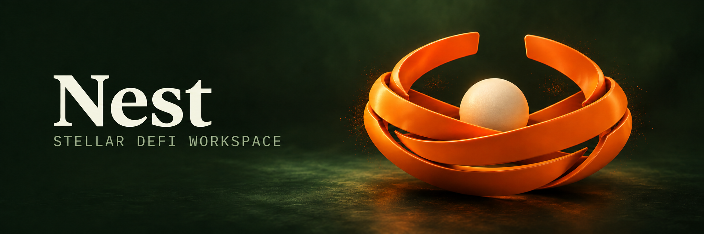

IBM Plex Serif / 600–700
Clarity before
commitment.
An agentic workspace for discovery, research, and execution across Stellar DeFi. Forest surfaces, warm typography, and a clear signal of orange.

Use the selected Nest identity ↗
 Nest
NestBroad interwoven ribbons gather around a single seed: a compact symbol of bringing context together before taking action.
72pxUse the symbol at 32px wide or larger. Clear space: at least one seed diameter. Use orange on forest, cream on forest, or dark wordmark on light. Keep it flat in product chrome; dimensional material belongs to brand artwork.
Keep Raven’s exact core palette and type families. Add explicit app semantics, readable secondary labels, and predictable spacing.
Click a swatch to copy its hex. Borders use Fog at 12% / 22%; essential input outlines use 40%. Hover orange: #FF7A33. Accessible subdued text: #829179. Raven’s original #71806A is reserved for decorative or disabled detail.
Clarity before
commitment.
Understand the options.
Choose your next move.
10,000.00 USDC
OBSERVED 14:32 UTC · 30D
24px workspace gaps · 12px control radius · 16px cards · 1px rules · 44px minimum targets.
Orange means action or selection. Gains use signed values and a success color. Status always has a text label and a distinct symbol.
One primary action per decision. A review precedes a signature. Orange buttons use dark text for 5.79:1 contrast.
Keep decimal strings exact. Identify network and issuer in the asset picker; show spendable balance after reserves.
× Amount exceeds available collateral.
State the limit and a clear recovery. Expired plans disable signing; submitted actions remain pending until confirmed.
Compact chrome, useful data, and an assistant that stays close. This specimen demonstrates its overlay state; production docks it at 1440px and above.
Illustrative values for layout only.
Units, periods and source times stay visible.
| Venue / asset | Exit | Data | Action | |
|---|---|---|---|---|
B BlendUSDC · direct supply | 5.42% | Available liquidity | ✓ Fresh | |
T TemplarUSDC · direct supply | 4.80% | Settlement dependent | ✓ Fresh | |
X XOXNOUSDC · direct supply | Unavailable | Check market terms | △ Stale |
Example fixture · APR is variable · source 14:32 UTC · no executable quote
Collateral, debt, horizon, max APR and venue preference. Compare identical inputs and preserve each venue’s native risk and settlement measures.
Horizontal opportunity rows, filter rail and a persistent action ticket. Separate base yield, incentives, fees and withdrawal conditions.
Wide price chart, exact-input ticket, minimum received, fees and price impact. A reference chart price never stands in for an executable quote.
Assets, liabilities and net value with valuation time. Show supported exits, actual effects, pending settlement and receipts together.

Build the nest from three broad ribbon meshes and a separate seed. Keep their crossings, open top, and the low bowl silhouette consistent with the flat mark.
Satin orange material, ivory seed, forest environment. Soft upper-left key, controlled edge highlights, a subtle grounding shadow. Typography remains a separate, flat overlay.
Open full motion brief ↗Small positional offsets resolve into one cradle.
A gentle downward drift; no bounce or spectacle.
Subtle parallax, then a readable still frame.
No autoplay. Keep text and composition identical.
Import the local Plex fonts, tokens.css, then components.css. The same tokens are provided as JSON. Serif titles, sans controls, mono data. Shadows and stipple stay restrained; dense workspaces use opaque panels.
Draft → Prepared → Awaiting signature → Submitted → Reconciling → Confirmed
Expired, rejected, failed and partially completed states include an explanation and recovery. One shared review sheet serves chat, tables and every action flow. Only a confirmed receipt earns a success label.
Artwork generated with the built-in image tool; SVG masters are clean geometric reconstructions of the selected concept. The cover is a raster art direction reference, not a 3D model. Primary SVG lockups have outlined wordmarks for portable use. The editable text variants use the included IBM Plex Serif font.